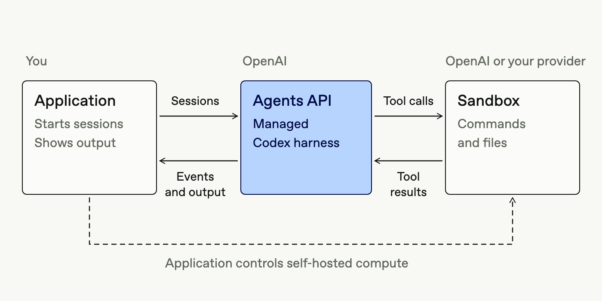

<title>Agent as a Service 综述</title>
<link rel="preconnect" href="https://fonts.googleapis.com">
<link rel="preconnect" href="https://fonts.gstatic.com" crossorigin>
<link rel="stylesheet" href="https://fonts.googleapis.com/css2?family=JetBrains+Mono:wght@400;600&family=Noto+Sans+SC:wght@400;500;700&family=Noto+Serif+SC:wght@600;900&display=swap">
<style>
/* Layout: a horizontal deck of article pages. Each page is one essay with a figure column; a fixed top rail navigates. */
:root {
  --paper: #f4f5f2;
  --panel: #ffffff;
  --ink: #15181b;
  --ink-2: #474d53;
  --ink-3: #6f767d;
  --rule: #d8dbd5;
  --accent: #0d5e69;
  --accent-soft: #dcebec;
  --c-session: #2a78d6;
  --c-model: #eb6834;
  --c-env: #1baf7a;
  --c-tool: #4a3aa7;
  --c-harness: #15181b;
  --figure-ground: #ffffff;
  --f-display: "Noto Serif SC", "Songti SC", "STSong", Georgia, serif;
  --f-body: "Noto Sans SC", "PingFang SC", "Microsoft YaHei", system-ui, sans-serif;
  --f-mono: "JetBrains Mono", ui-monospace, "SFMono-Regular", Menlo, monospace;
  --step--1: 0.8125rem;
  --step-0: 0.96875rem;
  --step-1: 1.15rem;
  --step-2: 1.5rem;
  --step-3: 2.1rem;
  --step-4: 3rem;
}
@media (prefers-color-scheme: dark) {
  :root:not([data-theme="light"]) {
    --paper: #111416; --panel: #191d20; --ink: #eceeec; --ink-2: #b5bbba; --ink-3: #8a9291; --rule: #2d3235;
    --accent: #5bb7c2; --accent-soft: #1b3236;
    --c-session: #3987e5; --c-model: #d95926; --c-env: #199e70; --c-tool: #9085e9; --c-harness: #eceeec;
    --figure-ground: #f3f4f2;
    color-scheme: dark;
  }
}
:root[data-theme="dark"] {
  --paper: #111416; --panel: #191d20; --ink: #eceeec; --ink-2: #b5bbba; --ink-3: #8a9291; --rule: #2d3235;
  --accent: #5bb7c2; --accent-soft: #1b3236;
  --c-session: #3987e5; --c-model: #d95926; --c-env: #199e70; --c-tool: #9085e9; --c-harness: #eceeec;
  --figure-ground: #f3f4f2;
  color-scheme: dark;
}
* { box-sizing: border-box; }
html, body { height: 100%; }
body { background: var(--paper); color: var(--ink); font-family: var(--f-body); font-size: var(--step-0); line-height: 1.75; }
a { color: var(--accent); }
a:focus-visible, button:focus-visible, select:focus-visible { outline: 2px solid var(--accent); outline-offset: 2px; }

/* rail */
.rail { position: sticky; top: env(safe-area-inset-top, 0px); z-index: 20; background: color-mix(in srgb, var(--paper) 92%, transparent); backdrop-filter: blur(6px); border-bottom: 1px solid var(--rule); }
.rail-in { max-width: 1180px; margin: 0 auto; padding: 10px 20px; display: flex; gap: 14px; align-items: center; }
.rail .brand { font-family: var(--f-display); font-weight: 900; font-size: var(--step-1); letter-spacing: .01em; white-space: nowrap; }
.rail .brand small { font-family: var(--f-mono); font-weight: 400; font-size: var(--step--1); color: var(--ink-3); margin-left: 8px; }
.rail .spacer { flex: 1; }
.rail select { font: inherit; font-size: var(--step--1); padding: 6px 8px; border-radius: 6px; border: 1px solid var(--rule); background: var(--panel); color: var(--ink); max-width: 46vw; }
.rail button { font: inherit; font-size: var(--step--1); border: 1px solid var(--rule); background: var(--panel); color: var(--ink); border-radius: 6px; padding: 6px 12px; cursor: pointer; }
.rail button:hover { border-color: var(--accent); }
.rail button:disabled { opacity: .4; cursor: default; }
.counter { font-family: var(--f-mono); font-size: var(--step--1); color: var(--ink-3); font-variant-numeric: tabular-nums; white-space: nowrap; }
.progress { height: 2px; background: var(--rule); }
.progress i { display: block; height: 100%; background: var(--accent); width: 0; transition: width .25s ease; }

/* pages */
.deck { max-width: 1180px; margin: 0 auto; padding-inline: 20px; padding-block: 28px 64px; }
.page { display: grid; gap: 28px; animation: pagein .28s ease; }
@keyframes pagein { from { transform: translateX(10px); } to { transform: none; } }
@media (prefers-reduced-motion: reduce) { .page { animation: none; } .progress i { transition: none; } }
.kicker { font-family: var(--f-mono); font-size: var(--step--1); letter-spacing: .08em; text-transform: uppercase; color: var(--ink-3); display: flex; gap: 10px; align-items: center; flex-wrap: wrap; }
.kicker .dot { width: 9px; height: 9px; border-radius: 2px; display: inline-block; }
h1, h2, h3 { font-family: var(--f-display); text-wrap: balance; margin: 0; line-height: 1.25; }
h1 { font-size: var(--step-4); font-weight: 900; letter-spacing: -.01em; }
h2 { font-size: var(--step-3); font-weight: 900; }
h3 { font-size: var(--step-1); font-weight: 600; margin-top: .4em; }
p { margin: 0; }
.lede { font-size: var(--step-1); color: var(--ink-2); max-width: 46em; line-height: 1.7; }
.cols { display: grid; grid-template-columns: minmax(0, 1fr) minmax(0, 1.25fr); gap: 36px; align-items: start; }
.cols.even { grid-template-columns: minmax(0, 1fr) minmax(0, 1fr); }
.cols.wide-left { grid-template-columns: minmax(0, 1.3fr) minmax(0, 1fr); }
@media (max-width: 880px) { .cols, .cols.even, .cols.wide-left { grid-template-columns: minmax(0, 1fr); } h1 { font-size: 2.2rem; } h2 { font-size: 1.7rem; } }
.prose { display: grid; gap: 14px; max-width: 40em; min-width: 0; }
.prose ul { margin: 0; padding-left: 1.2em; display: grid; gap: 6px; }
.prose strong { font-weight: 700; }
.term { font-family: var(--f-mono); font-size: .92em; background: var(--accent-soft); padding: 0 4px; border-radius: 3px; }
.figure { min-width: 0; display: grid; gap: 10px; }
.figure figcaption, .cap { font-size: var(--step--1); color: var(--ink-3); line-height: 1.6; }
.figure .frame { background: var(--panel); border: 1px solid var(--rule); border-radius: 8px; padding: 14px; overflow-x: auto; }
.figure .frame.photo { background: var(--figure-ground); }
.figure img { display: block; width: 100%; height: auto; }
.stack { display: grid; gap: 22px; min-width: 0; }
.divider { border: 0; border-top: 1px solid var(--rule); margin: 4px 0; }
.section-label { font-family: var(--f-mono); font-size: var(--step--1); letter-spacing: .08em; text-transform: uppercase; color: var(--accent); border-top: 1px solid var(--rule); padding-top: 12px; }

/* works list */
.works { display: grid; grid-template-columns: repeat(auto-fill, minmax(260px, 1fr)); gap: 14px; }
.work { border-top: 2px solid var(--ink); padding-top: 10px; display: grid; gap: 6px; align-content: start; min-width: 0; }
.work h4 { margin: 0; font-family: var(--f-body); font-size: var(--step-0); font-weight: 700; }
.work .where { font-family: var(--f-mono); font-size: var(--step--1); color: var(--ink-3); }
.work p { font-size: var(--step--1); color: var(--ink-2); line-height: 1.65; }

/* refs */
.ref { font-family: var(--f-mono); font-size: .72em; vertical-align: super; line-height: 0; margin-left: 2px; border: 0; background: none; color: var(--accent); cursor: pointer; padding: 0 1px; }
.ref:hover { text-decoration: underline; }
.pop { position: fixed; z-index: 50; max-width: min(420px, calc(100vw - 32px)); background: var(--panel); border: 1px solid var(--rule); border-radius: 8px; padding: 12px 14px; box-shadow: 0 8px 28px rgba(0,0,0,.18); font-size: var(--step--1); line-height: 1.55; }
.pop .t { font-weight: 700; color: var(--ink); }
.pop .m { color: var(--ink-3); font-family: var(--f-mono); margin-top: 4px; }
.pop .l { display: flex; gap: 12px; margin-top: 8px; flex-wrap: wrap; }

/* charts */
.chart { width: 100%; height: auto; display: block; font-family: var(--f-body); }
.chart text { fill: var(--ink-2); font-size: 12px; }
.chart .val { fill: var(--ink); font-family: var(--f-mono); font-size: 11.5px; }
.chart .axis { stroke: var(--rule); }
.chart .grid { stroke: var(--rule); stroke-dasharray: 2 3; }
.chart .hit { fill: transparent; cursor: default; }
.chart .hit:hover + .mark, .chart g.row:hover .mark { opacity: .8; }
.legend { display: flex; gap: 14px; flex-wrap: wrap; font-size: var(--step--1); color: var(--ink-2); }
.legend span { display: inline-flex; gap: 6px; align-items: center; }
.legend i { width: 10px; height: 10px; border-radius: 2px; display: inline-block; }
.tip { position: fixed; z-index: 40; pointer-events: none; background: var(--ink); color: var(--paper); font-size: 12px; padding: 6px 9px; border-radius: 5px; max-width: 300px; line-height: 1.45; }
.chart-title { font-weight: 700; font-size: var(--step-0); }

/* diagram svg */
.dgm { width: 100%; height: auto; display: block; font-family: var(--f-body); }
.dgm text { fill: var(--ink); }
.dgm .muted { fill: var(--ink-3); }
.dgm .sub { fill: var(--ink-2); }
.dgm .boxline { fill: var(--panel); stroke: var(--rule); }
.dgm .svc { fill: none; stroke: var(--ink-3); stroke-dasharray: 6 5; }
.dgm .harness { fill: var(--panel); stroke: var(--c-harness); stroke-width: 2; }
.dgm .chip { fill: var(--paper); stroke: var(--rule); }
.dgm .flow { stroke: var(--ink-3); fill: none; stroke-width: 1.4; }
.dgm .port:hover { opacity: .85; }
.dgm-wrap { overflow-x: auto; }
#model-dgm > svg, #evo-dgm > svg { min-width: 680px; }
.matrix .ref { vertical-align: baseline; font-size: 11px; line-height: 1.4; border: 1px solid var(--rule); border-radius: 3px; padding: 0 5px; margin: 0 2px 0 0; }
.matrix .mrefs { display: block; font-weight: 400; font-size: 11px; color: var(--ink-3); margin-top: 4px; }

/* matrix */
.matrix-tools { display: flex; gap: 8px; flex-wrap: wrap; }
.matrix-tools button { font: inherit; font-size: var(--step--1); border: 1px solid var(--rule); background: var(--panel); color: var(--ink-2); padding: 5px 10px; border-radius: 999px; cursor: pointer; }
.matrix-tools button[aria-pressed="true"] { background: var(--ink); color: var(--paper); border-color: var(--ink); }
.matrix { overflow-x: auto; border: 1px solid var(--rule); border-radius: 8px; background: var(--panel); }
.matrix table { border-collapse: collapse; width: 100%; min-width: 860px; font-size: var(--step--1); }
.matrix th, .matrix td { text-align: left; vertical-align: top; padding: 9px 10px; border-bottom: 1px solid var(--rule); line-height: 1.5; }
.matrix thead th { font-weight: 700; color: var(--ink); position: sticky; top: 0; background: var(--panel); }
.matrix thead th .bar { display: block; height: 3px; border-radius: 2px; margin-bottom: 6px; }
.matrix tbody th { font-weight: 700; min-width: 170px; }
.matrix tbody th small { display: block; font-weight: 400; color: var(--ink-3); font-family: var(--f-mono); }
.matrix .grp td { background: var(--accent-soft); color: var(--ink); font-weight: 700; font-family: var(--f-mono); font-size: 12px; letter-spacing: .05em; }
.own { display: inline-block; font-family: var(--f-mono); font-size: 11px; padding: 0 6px; border-radius: 3px; margin-right: 4px; border: 1px solid currentColor; white-space: nowrap; }
.own.h { color: var(--accent); }
.own.b { color: var(--ink-3); }
.own.o { color: var(--c-model); }
.own.n { color: var(--ink-3); border-style: dashed; }

/* stat line */
.facts { display: grid; grid-template-columns: repeat(auto-fit, minmax(150px, 1fr)); gap: 0; border-top: 1px solid var(--rule); border-bottom: 1px solid var(--rule); }
.fact { padding: 12px 14px 12px 0; display: grid; gap: 2px; }
.fact b { font-family: var(--f-mono); font-size: var(--step-2); font-weight: 600; font-variant-numeric: tabular-nums; }
.fact span { font-size: var(--step--1); color: var(--ink-3); line-height: 1.45; }

/* toc */
.toc { display: grid; grid-template-columns: repeat(auto-fill, minmax(240px, 1fr)); gap: 0 28px; }
.toc a { display: grid; grid-template-columns: 2.4em 1fr; gap: 6px; padding: 9px 0; border-bottom: 1px solid var(--rule); color: var(--ink); text-decoration: none; }
.toc a:hover span:last-child { color: var(--accent); }
.toc a span:first-child { font-family: var(--f-mono); color: var(--ink-3); font-variant-numeric: tabular-nums; }

/* sources */
.src-tools { display: flex; gap: 10px; flex-wrap: wrap; align-items: center; }
.src-tools input { font: inherit; font-size: var(--step--1); padding: 7px 10px; border: 1px solid var(--rule); border-radius: 6px; background: var(--panel); color: var(--ink); min-width: 0; width: min(340px, 100%); }
.src-list { display: grid; gap: 0; }
.src-group { font-family: var(--f-mono); font-size: 12px; letter-spacing: .06em; text-transform: uppercase; color: var(--accent); padding: 16px 0 6px; border-bottom: 1px solid var(--ink); }
.src-item { display: grid; grid-template-columns: minmax(0, 1fr) auto; gap: 4px 14px; padding: 8px 0; border-bottom: 1px solid var(--rule); font-size: var(--step--1); }
.src-item .t { color: var(--ink); }
.src-item .m { color: var(--ink-3); font-family: var(--f-mono); font-size: 11.5px; grid-column: 1; }
.src-item .l { grid-row: 1 / span 2; grid-column: 2; display: flex; gap: 10px; align-items: start; white-space: nowrap; }
@media (max-width: 640px) { .rail-in { flex-wrap: wrap; gap: 8px; padding: 8px 16px; } .rail .brand { flex: 1 0 100%; } .rail .spacer { display: none; } .rail select { flex: 1 1 0; min-width: 0; max-width: none; } .deck { padding-inline: 16px; } }
@media (max-width: 560px) { .src-item { grid-template-columns: minmax(0, 1fr); } .src-item .l { grid-row: auto; grid-column: 1; } .rail .brand small { display: none; } }
.note { font-size: var(--step--1); color: var(--ink-3); }
.pager-foot { display: flex; justify-content: space-between; gap: 12px; border-top: 1px solid var(--rule); padding-top: 16px; flex-wrap: wrap; }
.pager-foot button { font: inherit; border: 0; background: none; color: var(--accent); cursor: pointer; padding: 4px 0; text-align: left; }
.pager-foot button:disabled { color: var(--ink-3); cursor: default; }
</style>

<header class="rail">
  <div class="rail-in">
    <div class="brand">Agent as a Service<small>托管智能体服务 · 2026-10</small></div>
    <div class="spacer"></div>
    <select id="toc-select" aria-label="跳转到页面"></select>
    <button id="prev" aria-label="上一页">←</button>
    <span class="counter" id="counter">01 / 16</span>
    <button id="next" aria-label="下一页">→</button>
  </div>
  <div class="progress"><i id="bar"></i></div>
</header>

<main class="deck" id="deck">

<!-- ============ 1 封面 ============ -->
<section class="page" data-id="cover" data-title="总览">
  <div class="kicker"><span>综述</span><span>资料截止 2026-10-09</span></div>
  <h1>Agent as a Service<br>托管智能体服务的结构、现状与已有研究</h1>
  <p class="lede">OpenAI、Anthropic、Google、AWS 和 Microsoft 在 2026 年都提供了“把整个 agent 当作云服务来调用”的产品。应用通过 API 创建会话、下达任务、接收事件流，厂商在云端运行 agent 循环、调用模型、开沙箱执行命令、调用搜索等托管工具。本综述把这类服务拆成一个中心和四个外部接口，逐一说明各厂商怎么做、学术界做了哪些工作、这些工作测量和改进了什么。</p>
  <div class="facts" aria-label="资料规模">
    <div class="fact"><b>6</b><span>家平台方：OpenAI、Anthropic、Google、AWS、Microsoft、GitHub</span></div>
    <div class="fact"><b>90</b><span>个厂商页面（浏览器打印 PDF + 全文）</span></div>
    <div class="fact"><b>57</b><span>篇论文（预印本与 OSDI、NSDI 等正式发表）</span></div>
    <div class="fact"><b>4</b><span>家第三方沙箱与搜索服务：E2B、Daytona、Exa、Tavily</span></div>
  </div>
  <div class="section-label">目录</div>
  <nav class="toc" id="toc"></nav>
  <p class="note">翻页：顶部箭头、键盘 ← →，或在手机上左右滑动。正文中的上标链接指向对应原始资料，点开可看到原文链接、存档 PDF 和提取全文。</p>
</section>

<!-- ============ 2 模型 ============ -->
<section class="page" data-id="model" data-title="一个中心，四个接口">
  <div class="kicker"><span>概念模型</span></div>
  <h2>一个中心，四个接口</h2>
  <div class="figure">
    <div class="frame dgm-wrap" id="model-dgm"></div>
    <figcaption>托管智能体服务的结构模型。虚线框是服务边界，框内是厂商负责运行的部分；四个彩色方块是服务对外的接口，框外列出每个接口上常见的实际产品。各厂商的产品是在这个结构上做取舍：有的四个接口全托管，有的只托管中心，有的允许把执行环境换成用户自己的机器。</figcaption>
  </div>
  <div class="cols even">
    <div class="prose">
      <h3>术语</h3>
      <p><strong>Agent Harness（智能体执行框架）</strong>：图中心的部分，即通常所说的“狭义 agent”。它维护一个循环：把上下文发给模型，解析模型要调用的工具，执行工具，把结果写回上下文，直到任务结束。Claude Code、Codex、LangGraph 编排的程序都属于这一层。OpenAI 文档把这一层称为 “managed Codex harness”，Anthropic 称为 “agent harness”，Google 的 Managed Agents API 写明由 “Antigravity harness” 驱动。<button class="ref" data-r="openai/agents-api/architecture"></button><button class="ref" data-r="anthropic/claude-managed-agents/overview"></button><button class="ref" data-r="google/managed-agents/overview"></button></p>
      <p><strong>托管智能体服务（Managed Agent Service，亦称 Agent-as-a-Service）</strong>：整个虚线框，即“广义 agent”。Anthropic 和 Google 的产品名直接叫 Managed Agents，AWS 有 Bedrock Managed Agents，Microsoft 称为 Hosted agents。学术文献中 “Agent-as-a-Service” 一词已有使用，但含义偏向多智能体协作网络，见第 15 页。<button class="ref" data-r="aws/bedrock-managed-agents/overview"></button><button class="ref" data-r="microsoft/foundry-hosted-agents/hosted-agents"></button></p>
    </div>
    <div class="prose">
      <h3>四个接口</h3>
      <ul>
        <li><strong style="color:var(--c-session)">会话接口（Session API）</strong>：应用和最终用户进入服务的入口。OpenAI 与 Anthropic 都用 Session 和 Event 两个概念：会话是一个持久的 agent 实例，事件是双方交换的消息与状态。</li>
        <li><strong style="color:var(--c-model)">模型推理（Model Inference）</strong>：harness 每一轮都要调用的大模型。厂商自营服务绑定自家模型，云平台服务允许接入任意模型。</li>
        <li><strong style="color:var(--c-env)">执行环境（Execution Environment）</strong>：agent 运行命令、读写文件的地方，通常是一个容器、microVM 或虚拟机，文档里多称为 sandbox（沙箱）。它包含计算资源和 I/O 资源（磁盘、网络）。</li>
        <li><strong style="color:var(--c-tool)">托管工具（Hosted Tools）</strong>：服务替 agent 调用的其他云服务，例如网页搜索、代码解释器、浏览器、MCP 网关。这类调用一般按次计费。</li>
      </ul>
      <p>OpenAI Agents API 和 Claude Managed Agents 的文档都把服务拆成相同的四个资源：Agent（配置）、Environment（环境）、Session（会话）、Events（事件）。<button class="ref" data-r="openai/agents-api/overview"></button><button class="ref" data-r="anthropic/claude-managed-agents/overview"></button></p>
    </div>
  </div>
</section>

<!-- ============ 3 演进 ============ -->
<section class="page" data-id="evolution" data-title="从模型 API 到托管 harness">
  <div class="kicker"><span>背景</span></div>
  <h2>从模型 API 到托管 harness</h2>
  <p class="lede">Anthropic 在介绍 Managed Agents 的文章里把演进分成三步：只提供 tokens in / tokens out 的模型 API；把 Claude Code 内部的 harness 开放为 Agent SDK，由开发者自己部署；最后由厂商托管 harness 和沙箱。<button class="ref" data-r="anthropic/claude-managed-agents/product-blog"></button></p>
  <div class="figure">
    <div class="frame dgm-wrap" id="evo-dgm"></div>
    <figcaption>三种部署形态。第二种里 harness 与它操作的文件系统在同一个容器中；第三种把二者拆开，中间用会话日志连接。Crab 论文把这两种形态分别称为 agent-in-a-sandbox 和 agent-with-a-sandbox。<button class="ref" data-r="crab"></button></figcaption>
  </div>
  <div class="cols">
    <div class="prose">
      <h3>拆开 harness 与沙箱之后发生了什么</h3>
      <p>Anthropic 的文章列出了第二种形态的三个问题：容器要先启动，模型才能开始推理；模型生成的代码和凭据在同一个容器里；容器退出，整个运行也随之丢失。第三种形态的对应做法是：</p>
      <ul>
        <li>harness 与环境并行启动，模型在环境就绪前就开始推理；从不调用工具的会话不创建容器。</li>
        <li>MCP、CLI、GitHub 的令牌存在单独的 vault 中，由代理在需要时取出，不进入沙箱。</li>
        <li>会话是一个仅追加的事件日志，存在运行 agent 的进程之外；会话空闲时容器被打检查点，之后可以从原处恢复。</li>
      </ul>
      <p>OpenAI Agents API 的架构页给出同样的三方划分：OpenAI 托管的 harness、可选的环境、用户的应用服务器。环境可以设为 <span class="term">none</span>、<span class="term">openai_hosted</span> 或 <span class="term">self_hosted</span>。<button class="ref" data-r="openai/agents-api/architecture"></button></p>
    </div>
    <div class="stack">
      <figure class="figure">
        <div class="frame photo"></div>
        <figcaption>OpenAI 原图：带沙箱的 Agents API。虚线表示自托管时应用负责环境的生命周期。<button class="ref" data-r="openai/agents-api/architecture"></button></figcaption>
      </figure>
      <figure class="figure">
        <div class="frame photo"></div>
        <figcaption>Google 原图：Managed Agents API 用 Agents API 做控制面、Interactions API 做数据面。<button class="ref" data-r="google/managed-agents/overview"></button></figcaption>
      </figure>
    </div>
  </div>
</section>

<!-- ============ 4 版图 ============ -->
<section class="page" data-id="landscape" data-title="厂商版图">
  <div class="kicker"><span>现状</span></div>
  <h2>厂商版图：谁托管了哪一部分</h2>
  <p class="lede">按“harness 由谁提供”可以把产品分成两类。第一类厂商自己提供 harness，用户只写配置；第二类是运行平台，用户把用自己框架写的 agent 打包成容器部署上去。此外还有只提供执行环境的沙箱厂商、只提供搜索的工具厂商，以及直接面向开发者的云端编程 agent 应用。</p>
  <div class="matrix-tools" role="group" aria-label="按类别筛选">
    <button data-f="all" aria-pressed="true">全部</button>
    <button data-f="managed" aria-pressed="false">厂商提供 harness</button>
    <button data-f="runtime" aria-pressed="false">运行平台</button>
    <button data-f="sandbox" aria-pressed="false">沙箱</button>
    <button data-f="tool" aria-pressed="false">工具</button>
    <button data-f="app" aria-pressed="false">云端编程应用</button>
  </div>
  <div class="matrix" id="matrix"></div>
  <p class="cap"><span class="own h">托管</span>由服务方运行 <span class="own o">可选</span>托管或自带二选一 <span class="own b">自带</span>由用户提供 <span class="own n">无</span>文档未提供。单元格文字摘自对应官方页面，点击行首的上标查看来源。</p>
</section>

<!-- ============ 5 Harness ============ -->
<section class="page" data-id="harness" data-title="中心：Agent Harness">
  <div class="kicker"><span class="dot" style="background:var(--c-harness)"></span><span>中心</span></div>
  <h2>Agent Harness</h2>
  <div class="cols">
    <div class="prose">
      <h3>产品</h3>
      <p>厂商托管的 harness 提供的能力在文档中写得比较一致。OpenAI 列出：在沙箱中运行命令与代码、加载 skills 与指令、通过工具或 MCP 连接外部数据、在运行中接受用户引导（steering）、总结早先的工作以管理上下文窗口、拆分子任务交给子 agent、从中断处恢复会话。<button class="ref" data-r="openai/agents-api/overview"></button> Anthropic 列出内置的 prompt caching 与 compaction，以及 Bash、文件操作、网页搜索与抓取、MCP 等内置工具。<button class="ref" data-r="anthropic/claude-managed-agents/overview"></button></p>
      <p>运行平台则不提供 harness。AWS AgentCore Runtime 写明支持 LangGraph、Strands、CrewAI 以及不使用框架的自定义 agent，平台页面还列出 OpenAI Agents SDK 与 Claude Agent SDK。<button class="ref" data-r="aws/agentcore-runtime/runtime"></button><button class="ref" data-r="aws/agentcore/overview"></button> Google Agent Runtime 按集成深度把框架分三档：ADK 为完全集成，LangChain、LangGraph、AG2、LlamaIndex 有 SDK 模板，CrewAI 等需自定义模板。<button class="ref" data-r="google/agent-runtime/overview"></button></p>
      <h3>为什么要托管</h3>
      <p>Anthropic 给出的理由是 harness 需要跟着模型调整。文中的例子：在 Claude Sonnet 4.5 上，agent 接近上下文上限时会提前收尾，他们为此在 harness 中加入上下文重置；到 Claude Opus 4.5 这种行为消失，重置成了多余的开销。<button class="ref" data-r="anthropic/claude-managed-agents/product-blog"></button></p>
      <h3>运行中的工作负载</h3>
      <p>Talaria 分析了 445 个 SWE-bench Verified 会话、7,386 次模型调用：每个会话中位数 11 次调用，两次调用之间的工具间隔中位数 0.39 秒，提示长度中位数 25K tokens，超过 96.8% 的续接请求复用前一次调用一半以上的前缀。<button class="ref" data-r="talaria"></button> Crab 的 Terminal-Bench 轨迹中，单轮中位时长 3.34 秒，每个任务约 117 轮，<span class="term">run_shell_command</span> 占全部工具调用的 60.4%。<button class="ref" data-r="crab"></button></p>
    </div>
    <div class="stack">
      <figure class="figure">
        <div class="frame photo"></div>
        <figcaption>Talaria 原图：会话深度、调用间隔与上下文长度的累积分布。<button class="ref" data-r="talaria"></button></figcaption>
      </figure>
      <div class="figure">
        <div class="chart-title">轨迹裁剪与模型级联对成本的影响</div>
        <div id="ch-harness"></div>
        <figcaption>AgentDiet 在 agent 运行时删除轨迹中无用、重复和过期的内容；BudgetMLAgent 以免费模型为主，按需调用 GPT-4；Murakkab 把工作流声明与模型、硬件的选择分开，由优化器按 SLO 选配置。数值为各论文报告值，Murakkab 的倍数按 1 − 1/倍数 换算为降幅；指标各不相同，不宜横向比较。<button class="ref" data-r="trajectory-reduction"></button><button class="ref" data-r="budgetmlagent"></button><button class="ref" data-r="murakkab"></button></figcaption>
      </div>
    </div>
  </div>
  <div class="section-label">已有工作</div>
  <div class="works">
    <div class="work"><h4>SWE-agent</h4><div class="where">arXiv 2405.15793</div><p>为模型设计专用的“agent-计算机接口”（文件查看、编辑、搜索命令），在 SWE-bench 上 pass@1 达到 12.5%。说明 harness 暴露给模型的工具形态直接影响结果。<button class="ref" data-r="swe-agent"></button></p></div>
    <div class="work"><h4>AgentDiet（Trajectory Reduction）</h4><div class="where">arXiv 2509.23586</div><p>在两种模型、两个基准上，输入 token 减少 39.9%–59.7%，总计算成本减少 21.1%–35.9%，任务表现不变。<button class="ref" data-r="trajectory-reduction"></button></p></div>
    <div class="work"><h4>BudgetMLAgent</h4><div class="where">arXiv 2411.07464</div><p>多 agent 加 LLM 级联，每次运行平均成本从 $0.931 降到 $0.054，MLAgentBench 平均成功率从 22.72% 到 32.95%。<button class="ref" data-r="budgetmlagent"></button></p></div>
    <div class="work"><h4>Murakkab</h4><div class="where">OSDI 2026</div><p>声明式工作流抽象加画像驱动优化器，在满足 SLO 的前提下 GPU 用量最多减少 2.8 倍、能耗 3.7 倍、成本 4.3 倍。<button class="ref" data-r="murakkab"></button></p></div>
    <div class="work"><h4>Everything is Context</h4><div class="where">arXiv 2512.05470</div><p>把记忆、工具、人工输入等上下文统一挂载为文件系统对象，在 AIGNE 框架中实现上下文的构造、加载与评估流水线。<button class="ref" data-r="everything-is-context"></button></p></div>
    <div class="work"><h4>FS-Researcher</h4><div class="where">arXiv 2602.01566</div><p>两个 agent 通过持久工作区协作：一个收集资料写入层级笔记库，另一个按节写报告，使深度研究任务突破上下文长度。<button class="ref" data-r="fs-researcher"></button></p></div>
  </div>
</section>

<!-- ============ 6 会话 ============ -->
<section class="page" data-id="session" data-title="接口一：会话">
  <div class="kicker"><span class="dot" style="background:var(--c-session)"></span><span>接口一</span></div>
  <h2>会话接口</h2>
  <div class="cols">
    <div class="prose">
      <h3>产品</h3>
      <p>托管服务的调用单位从“一次请求”变成“一个会话”。OpenAI 的会话流程是：创建会话，服务准备环境；输入任务开始一轮工作；通过流式事件或 webhook 跟踪进展；在同一会话中继续下达任务，或在当前一轮运行中途插话引导。<button class="ref" data-r="openai/agents-api/overview"></button> Anthropic 的事件通过 SSE 推送，事件历史保存在服务端，可完整取回。<button class="ref" data-r="anthropic/claude-managed-agents/overview"></button></p>
      <p>Microsoft Hosted agents 提供两种协议：Responses 协议兼容 OpenAI Responses API，由平台管理对话历史；Invocations 协议接受任意 JSON，会话状态由用户代码管理。另有 WebSocket 版本用于实时语音，以及 A2A 与 Teams 的 Activity 协议。<button class="ref" data-r="microsoft/foundry-hosted-agents/hosted-agents"></button></p>
      <h3>会话状态与计算资源分离</h3>
      <p>各家都把“会话存在”与“会话占着计算资源”分开处理：</p>
      <ul>
        <li>Microsoft：会话在 2–60 分钟（默认 15 分钟）无请求后释放计算，<span class="term">$HOME</span> 和 <span class="term">/files</span> 持久化；再次访问时在新机器上恢复；闲置 30 天后删除。<button class="ref" data-r="microsoft/foundry-hosted-agents/hosted-agents"></button></li>
        <li>Anthropic：会话运行时长只在状态为 running 时计费，等待用户输入、等待工具确认的时间不计。<button class="ref" data-r="anthropic/claude-api/pricing"></button></li>
        <li>OpenAI：自托管环境下，服务在需要执行器时发出 <span class="term">environment_connection</span> 事件，由用户的 webhook 去启动机器；一次输入最多等待 5 分钟连接。<button class="ref" data-r="openai/agents-api/sandbox-lifecycle"></button></li>
        <li>Anthropic 自托管：环境是一个工作队列，没有 worker 在线时会话保持排队，不会失败。<button class="ref" data-r="anthropic/claude-managed-agents/self-hosted-sandboxes"></button></li>
      </ul>
    </div>
    <div class="stack">
      <div class="figure">
        <div class="frame dgm-wrap" id="life-dgm"></div>
        <figcaption>综合几家文档得到的会话生命周期。蓝色状态下计算资源在运行；灰色状态下只保留会话日志与持久化文件。</figcaption>
      </div>
      <div class="figure">
        <div class="chart-title">各产品的时间上限（对数坐标，小时）</div>
        <div class="legend" id="lg-limits"></div>
        <div id="ch-limits"></div>
        <figcaption>三类数值含义不同：单次运行上限、空闲多久后回收计算、空闲多久后删除状态。来源依次为 GitHub、OpenAI、E2B、AWS、Google、Microsoft 的官方页面。</figcaption>
      </div>
    </div>
  </div>
  <div class="section-label">已有工作</div>
  <div class="works">
    <div class="work"><h4>τ-bench</h4><div class="where">arXiv 2406.12045</div><p>用模型模拟用户，与 agent 多轮对话，按数据库终态判分；提出 pass^k 衡量多次运行的一致性。gpt-4o 成功率不到 50%，零售领域 pass^8 低于 25%。<button class="ref" data-r="tau-bench"></button></p></div>
    <div class="work"><h4>人机协作综述</h4><div class="where">arXiv 2505.00753</div><p>整理 LLM 人机协作系统中人提供信息、反馈与控制的方式，以及交互类型和编排方式。<button class="ref" data-r="human-agent-collaboration-survey"></button></p></div>
    <div class="work"><h4>OVON 互操作框架</h4><div class="where">arXiv 2407.19438</div><p>Linux Foundation 的 Open Voice Network 提出基于自然语言的通用 API 与发现规范，让不同对话 agent 互相调用。<button class="ref" data-r="conversational-interoperability"></button></p></div>
  </div>
</section>

<!-- ============ 7 模型 ============ -->
<section class="page" data-id="inference" data-title="接口二：模型推理">
  <div class="kicker"><span class="dot" style="background:var(--c-model)"></span><span>接口二</span></div>
  <h2>模型推理</h2>
  <div class="cols">
    <div class="prose">
      <h3>产品</h3>
      <p>模型厂商自营的托管服务只接自家模型：OpenAI Agents API 按所选模型的 API 价格计费，Claude Managed Agents 的 token 按模型价目表计费，prompt caching 倍率同样适用。<button class="ref" data-r="openai/agents-api/overview"></button><button class="ref" data-r="anthropic/claude-api/pricing"></button> 云平台把模型和 harness 分开：AgentCore Runtime 写明可用 Bedrock、Claude、Gemini、OpenAI 等任意模型；Microsoft Hosted agents 调用 Foundry 模型目录中的模型。<button class="ref" data-r="aws/agentcore-runtime/runtime"></button><button class="ref" data-r="microsoft/foundry-hosted-agents/hosted-agents"></button> Bedrock Managed Agents 在 Bedrock 内运行 OpenAI 的 harness 和模型推理。<button class="ref" data-r="openai/agents-api/bedrock-managed-agents"></button></p>
      <h3>agent 请求和普通对话请求的差别</h3>
      <p>一次 agent 任务对推理服务表现为一串间隔很短、前缀不断变长且大部分重复的请求（第 5 页 Talaria 数据）。前缀复用因此决定成本。Anthropic 价目表中缓存命中按标准输入价的 10% 计；Fable 5.1 为 2.5%，Opus 5.5 与 Sonnet 5.5 为 5%。<button class="ref" data-r="anthropic/claude-api/pricing"></button> Agentic AI 推理侧的论文大多围绕 KV cache 的保留、复用与迁移展开。</p>
      <p>Talaria 指出，按请求独立调度的 serverless 多模型系统会把一个会话的下一次调用路由到既没有模型权重、也没有 KV 前缀的实例上。在 Qwen3-235B、TP=8 上重算一个 25K token 的中位前缀需要 4.3 秒 TTFT，而工具间隔中位数只有 0.39 秒。<button class="ref" data-r="talaria"></button></p>
    </div>
    <div class="stack">
      <div class="figure">
        <div class="chart-title">Talaria：会话完成时间（秒）</div>
        <div class="legend" id="lg-talaria"></div>
        <div id="ch-talaria"></div>
        <figcaption>单台 TP=8 服务器回放 30 个 SWE-bench 模型会话（960 次调用），三种超千亿参数模型。基线为关闭会话预填、主机 KV 恢复和 D2D 预取的同一调度器。<button class="ref" data-r="talaria"></button></figcaption>
      </div>
      <div class="figure">
        <div class="chart-title">Claude 模型价格（美元 / 百万 token）</div>
        <div class="legend" id="lg-price"></div>
        <div id="ch-price"></div>
        <figcaption>Haiku 5.5 为 10 万 token 以内提示的价格。<button class="ref" data-r="anthropic/claude-api/pricing"></button></figcaption>
      </div>
    </div>
  </div>
  <div class="section-label">已有工作</div>
  <div class="works">
    <div class="work"><h4>vLLM / PagedAttention</h4><div class="where">arXiv 2309.06180</div><p>按操作系统分页的方式管理 KV cache，几乎消除碎片，并允许请求内外共享 KV；相同延迟下吞吐为 FasterTransformer、Orca 的 2–4 倍。<button class="ref" data-r="vllm"></button></p></div>
    <div class="work"><h4>SGLang</h4><div class="where">arXiv 2312.07104</div><p>RadixAttention 用基数树保存可复用的 KV 前缀，压缩状态机加速结构化输出；在 agent 控制、多轮对话等任务上吞吐最高为对比系统的 6.4 倍。<button class="ref" data-r="sglang"></button></p></div>
    <div class="work"><h4>Talaria</h4><div class="where">arXiv 2607.17181</div><p>把会话连续性作为调度单位：路由同时考虑模型驻留、KV 位置和实例压力，并为可能返回的会话预留准入额度。<button class="ref" data-r="talaria"></button></p></div>
    <div class="work"><h4>ServerlessLLM</h4><div class="where">arXiv 2401.14351</div><p>利用 GPU 服务器本地存储做多级检查点加载，配合推理在线迁移，延迟降低 10–200 倍。<button class="ref" data-r="serverlessllm"></button></p></div>
    <div class="work"><h4>BlitzScale</h4><div class="where">arXiv 2412.17246</div><p>经 GPU 间计算网络多播加载参数，并按层把计算卸载到正在加载的新实例；相对 ServerlessLLM 尾延迟最多降低 94%。<button class="ref" data-r="blitzscale"></button></p></div>
    <div class="work"><h4>HydraServe</h4><div class="where">arXiv 2502.15524</div><p>面向公有云 serverless 推理，预分发模型、在 worker 内重叠冷启动阶段，冷启动延迟降低 1.7–4.7 倍。<button class="ref" data-r="hydraserve"></button></p></div>
    <div class="work"><h4>DeepServe</h4><div class="where">arXiv 2501.14417</div><p>华为昇腾 NPU 集群上运行一年以上的 serverless 平台，用预热 pod、DRAM 预加载和 NPU-fork 在数秒内扩到 64 个实例，对外提供微调、agent 与模型服务 API。<button class="ref" data-r="deepserve"></button></p></div>
    <div class="work"><h4>Festina</h4><div class="where">arXiv 2606.30391</div><p>共享 GPU 上的 serverless LLM 推理按能耗优先调度：联合决定请求放置、SM 划分与 GPU 工作频点，能耗最多降低 56%，SLO 达成率差距在 2% 以内。<button class="ref" data-r="energy-aware-serverless"></button></p></div>
    <div class="work"><h4>QServe / ENOVA</h4><div class="where">arXiv 2405.04532 · 2407.09486</div><p>QServe 用 W4A8KV4 量化与系统协同设计提升吞吐；ENOVA 做多 GPU 集群上的配置推荐与自动扩缩容。<button class="ref" data-r="qserve"></button><button class="ref" data-r="enova"></button></p></div>
  </div>
</section>

<!-- ============ 8 环境 产品 ============ -->
<section class="page" data-id="environment" data-title="接口三：执行环境">
  <div class="kicker"><span class="dot" style="background:var(--c-env)"></span><span>接口三 · 产品</span></div>
  <h2>执行环境</h2>
  <div class="cols">
    <div class="prose">
      <h3>隔离方式</h3>
      <p>AgentCore Runtime 为每个用户会话分配一个独立 microVM，有独立的 CPU、内存和文件系统，会话结束后整个 microVM 终止并清理内存。<button class="ref" data-r="aws/agentcore-runtime/runtime"></button> Microsoft Hosted agents 为每个会话分配一个 VM 隔离的沙箱。<button class="ref" data-r="microsoft/foundry-hosted-agents/hosted-agents"></button> Anthropic 云沙箱是托管基础设施上的隔离 Linux 容器（Ubuntu 24.04）。<button class="ref" data-r="anthropic/claude-managed-agents/cloud-sandbox-reference"></button> GKE Agent Sandbox 使用 gVisor，为每次代码执行动态创建 pod。<button class="ref" data-r="google/gke-agent-sandbox/pod-snapshot-blog"></button> Cloud Run sandboxes 在已有服务实例内启动，文件系统只读，写入落在临时内存覆盖层，执行结束即丢弃，默认无出站网络，也无法访问元数据服务器。<button class="ref" data-r="google/cloud-run-sandboxes/announcement"></button></p>
      <h3>资源规格</h3>
      <p>Microsoft 每会话可选 0.5 vCPU/1 GiB、1 vCPU/2 GiB、2 vCPU/4 GiB，1 vCPU 以上磁盘预算 20 GiB，约 20% 留作系统用。文档提示 CPU 与内存按单个会话配置，按所有活跃会话的用量计费，配大了成本会随并发成倍增加。<button class="ref" data-r="microsoft/foundry-hosted-agents/hosted-agents"></button> AgentCore 的 Instances 计算类型在用户账户中运行 EC2 托管实例，会话最长 14 天，可用 GPU，并允许多个 agent 共享一台实例和文件系统；microVM 会话最长 8 小时。<button class="ref" data-r="aws/agentcore-runtime/instances"></button></p>
      <h3>持久化</h3>
      <ul>
        <li>AgentCore 托管会话存储：挂载在 <span class="term">/mnt</span> 下，跨 stop/resume 保留，每会话上限 1 GB，空闲 14 天后清理。<button class="ref" data-r="aws/agentcore-runtime/persistent-filesystem"></button></li>
        <li>Google Managed Agents：沙箱 TTL 7 天，每次交互重新计时；运行时安装的包保存在环境快照中，同一 <span class="term">env_id</span> 可被多个 agent 共享。<button class="ref" data-r="google/managed-agents/sandbox-environment"></button></li>
        <li>OpenAI 托管沙箱：<span class="term">/workspace/outputs</span> 下的文件在每轮结束时发布为不可变制品，沙箱过期后仍可下载；连续一小时没有活动和心跳的沙箱可能被删除。<button class="ref" data-r="openai/agents-api/hosted-sandbox"></button></li>
        <li>Codex Cloud：发布环境时保存准备好的文件系统，新任务从它开始，已有任务保留各自状态。<button class="ref" data-r="openai/codex-cloud/environments"></button></li>
      </ul>
    </div>
    <div class="stack">
      <div class="figure">
        <div class="frame dgm-wrap" id="iso-dgm"></div>
        <figcaption>按内核是否共享划分的隔离层级，以及各产品在文档中写明的位置。SideKernel 论文用类似的层级划分本地沙箱。<button class="ref" data-r="sidekernel"></button></figcaption>
      </div>
      <div class="figure">
        <div class="chart-title">Google Agent Runtime：冷启动与并发配置（秒）</div>
        <div id="ch-cold"></div>
        <figcaption>Google 文档中 300 个并发请求的示例。<span class="term">container_concurrency</span> 默认 9 时最大延迟 60 秒，调到 36 后约 7 秒。<button class="ref" data-r="google/agent-platform/runtime-scaling"></button></figcaption>
      </div>
      <div class="figure">
        <div class="frame dgm-wrap" id="cred-dgm"></div>
        <figcaption>凭据不进沙箱的做法。OpenAI 托管沙箱、Codex Cloud 的 network secret、Claude Code 云会话的 GitHub 代理、Vercel 沙箱防火墙都采用此类方式：沙箱内只有占位符，出站代理对白名单域名替换为真实值。<button class="ref" data-r="openai/agents-api/sandbox-security"></button><button class="ref" data-r="openai/codex-cloud/environments"></button><button class="ref" data-r="anthropic/claude-code-web/overview"></button><button class="ref" data-r="anthropic/claude-managed-agents/updates"></button></figcaption>
      </div>
    </div>
  </div>
  <div class="prose" style="max-width:none">
    <h3>启动时间</h3>
    <p>Google Agent Platform 的沙箱从冷启动创建最长约 2 分钟，资源准备好后通常数秒启动。<button class="ref" data-r="google/agent-platform-sandbox/overview"></button> Cloud Run 公布的示例中，启动、执行、停止 1,000 个沙箱平均延迟 500 ms。<button class="ref" data-r="google/cloud-run-sandboxes/announcement"></button> GKE 的 Pod Snapshots 保存运行中沙箱的状态再恢复，启动时间从数分钟降到数秒。<button class="ref" data-r="google/gke-agent-sandbox/pod-snapshot-blog"></button> AgentCore Runtime V2 从快照启动 agent，使冷启动不随并发和镜像大小变化。<button class="ref" data-r="aws/agentcore-runtime/runtime"></button></p>
  </div>
</section>

<!-- ============ 9 环境 研究 ============ -->
<section class="page" data-id="env-research" data-title="执行环境：已有研究">
  <div class="kicker"><span class="dot" style="background:var(--c-env)"></span><span>接口三 · 已有工作</span></div>
  <h2>检查点、回滚与沙箱基础设施</h2>
  <p class="lede">2026 年关于 agent 执行环境的论文集中在一个问题上：agent 的状态不只在对话历史里，还在文件系统和进程里。树搜索、RL rollout 分支、故障恢复、抢占式实例都需要对整个沙箱打检查点（checkpoint）并回滚（rollback），简称 C/R。</p>
  <div class="cols even">
    <div class="figure">
      <div class="chart-title">Crab：注入一次故障后的任务求解率（%）</div>
      <div class="legend" id="lg-crab"></div>
      <div id="ch-crab"></div>
      <figcaption>50 个 Terminal-Bench 任务，各随机注入一次故障。只恢复对话历史时，回放模式下仅 6% 成功；恢复对话加文件系统为 48% / 34%；从头重跑正确但耗时增加 1.81 倍（回放）和 1.55 倍（实时）。<button class="ref" data-r="crab"></button></figcaption>
    </div>
    <div class="figure">
      <div class="chart-title">DeltaBox：状态管理占总时间的比例（%）</div>
      <div id="ch-delta"></div>
      <figcaption>SWE-bench 上 E2B（diff 模式）的状态管理占 23%–48%，DeltaBox 为 1%–2%；DeltaBox 检查点 14 ms、回滚 5 ms，E2B 恢复约为 DeltaBox 的 480 倍。<button class="ref" data-r="deltabox"></button></figcaption>
    </div>
  </div>
  <div class="section-label">检查点与回滚</div>
  <div class="works">
    <div class="work"><h4>Crab</h4><div class="where">arXiv 2604.28138</div><p>用 eBPF 判断每一轮对 OS 的实际影响，超过 75% 的轮次不产生需恢复的状态，因此只在必要时打检查点，并与 LLM 等待时间重叠。恢复正确率从 8%（只恢复对话）到 100%，检查点流量最多减少 87%，开销在无故障执行时间的 1.9% 以内。<button class="ref" data-r="crab"></button></p></div>
    <div class="work"><h4>DeltaBox</h4><div class="where">arXiv 2605.22781</div><p>相邻检查点差别很小，因此只复制变化部分：DeltaFS 用分层文件系统让回滚变成层切换，DeltaCR 用增量转储并从冻结的模板进程直接 fork()。<button class="ref" data-r="deltabox"></button></p></div>
    <div class="work"><h4>Fork, Explore, Commit</h4><div class="where">arXiv 2602.08199</div><p>提出 branch context：写时复制的文件视图加进程组，fork / explore / commit 生命周期，先提交者胜出并自动作废兄弟分支。BranchFS 创建分支小于 350 µs，与底层文件系统大小无关。<button class="ref" data-r="fork-explore-commit"></button></p></div>
    <div class="work"><h4>RippleCP</h4><div class="where">arXiv 2610.09088</div><p>测量“在某处打检查点”到底省下多少恢复时间。12 个 SWE-bench Verified 任务、106 条恢复分支：第一个检查点保护 156.5 秒工作、省 100.0 秒；紧接着第二个省 −1.1 秒。恢复是重新推导，不是回放。<button class="ref" data-r="ripplecp"></button></p></div>
  </div>
  <div class="section-label">回滚的安全问题</div>
  <div class="works">
    <div class="work"><h4>ACRFence</h4><div class="where">arXiv 2603.20625</div><p>恢复后 LLM 会生成内容略有不同的请求，服务端视为新请求，造成重复支付、已消费凭据被再次使用。论文称之为语义回滚攻击，并记录不可逆工具调用以强制“重放或分叉”。<button class="ref" data-r="acrfence"></button></p></div>
    <div class="work"><h4>Safe to Resume?</h4><div class="where">arXiv 2608.29381</div><p>归纳出五类失效条件，对 Hermes、Cline、LangGraph 实现了绕过恶意软件检查、未授权转发邮件和重复支付三种端到端攻击。<button class="ref" data-r="safe-to-resume"></button></p></div>
    <div class="work"><h4>YoloFS</h4><div class="where">arXiv 2604.13536</div><p>分析 290 份 agent 误用文件系统的公开报告，提出 agent 原生文件系统应提供效果查看、撤销修改、访问闸门三种原语。在 11 个带隐藏副作用的任务中，agent 在 8 个中自行纠正。<button class="ref" data-r="agent-native-filesystems"></button></p></div>
    <div class="work"><h4>ChronoMem</h4><div class="where">arXiv 2607.27773</div><p>对 agent 长期记忆做版本控制，每次写入提交快照，支持用自然语言请求回滚到某个历史版本，集成在 Google ADK 中。<button class="ref" data-r="chronomem"></button></p></div>
  </div>
  <div class="section-label">沙箱基础设施</div>
  <div class="works">
    <div class="work"><h4>Firecracker</h4><div class="where">NSDI 2020</div><p>为 serverless 设计的轻量 VMM，用于 AWS Lambda 和 Fargate。AgentCore Runtime 使用 microVM，Crab 论文提到 E2B 基于 Firecracker。<button class="ref" data-r="firecracker"></button><button class="ref" data-r="crab"></button><button class="ref" data-r="aws/firecracker/announcement"></button></p></div>
    <div class="work"><h4>TrEnv-X</h4><div class="where">arXiv 2509.09525</div><p>可在不同函数间复用的沙箱，加上基于 CXL/RDMA 远端内存的 OS 级内存模板；扩展到 microVM agent 负载，增加浏览器共享和绕过页缓存。相对 E2B，P99 延迟最多降低 58%，内存减少 61%。<button class="ref" data-r="trenv-x"></button></p></div>
    <div class="work"><h4>DSec（DeepSeek Elastic Compute）</h4><div class="where">arXiv 2609.22978</div><p>统一 SDK 后面有函数调用、容器、microVM、完整 VM 四种后端，镜像从 3FS 按需加载。见第 14 页。<button class="ref" data-r="deepseek-elastic-compute"></button></p></div>
    <div class="work"><h4>SideKernel</h4><div class="where">arXiv 2610.02456</div><p>面向 macOS 本地开发的 microVM 沙箱。作者的问卷显示不到 40% 的编程 agent 用户在沙箱中运行 agent。<button class="ref" data-r="sidekernel"></button></p></div>
  </div>
</section>

<!-- ============ 10 工具 ============ -->
<section class="page" data-id="tools" data-title="接口四：托管工具">
  <div class="kicker"><span class="dot" style="background:var(--c-tool)"></span><span>接口四</span></div>
  <h2>托管工具</h2>
  <div class="cols">
    <div class="prose">
      <h3>网页搜索</h3>
      <p>模型厂商都把搜索做成服务端工具。OpenAI web search 按次计费，检索到的内容 token 按模型价格另计。<button class="ref" data-r="openai/api/pricing"></button> Anthropic 每千次 $10，搜索结果在当轮和后续轮次都计为输入 token。<button class="ref" data-r="anthropic/claude-api/pricing"></button> Google 的 Grounding with Google Search 每月 5,000 次免费，之后每千次 $14，一个提示触发多次查询时每次查询单独计费。<button class="ref" data-r="google/gemini-api/pricing"></button> 第三方搜索 API（Exa、Tavily）按请求或积分计费，也被 agent 框架直接调用，例如 AWS 部署 Deep Agents 的示例使用 Tavily。<button class="ref" data-r="exa/search/pricing"></button><button class="ref" data-r="tavily/search/pricing"></button><button class="ref" data-r="aws/agentcore-runtime/deep-research-blog"></button></p>
      <h3>代码执行与浏览器</h3>
      <p>OpenAI 的 Hosted Shell 与 Code Interpreter 按容器计费：1 GB $0.03、4 GB $0.12、16 GB $0.48、64 GB $1.92，每 20 分钟一个会话。<button class="ref" data-r="openai/api/pricing"></button> Anthropic 的代码执行工具每个组织每月 1,550 小时免费，超出部分每容器每小时 $0.05，最少计 5 分钟；与 web search 或 web fetch 一起使用时不另收费。<button class="ref" data-r="anthropic/claude-api/pricing"></button> AgentCore 的 Browser 和 Code Interpreter 是独立托管工具，按 vCPU 小时和 GB 小时计费。<button class="ref" data-r="aws/agentcore/pricing"></button><button class="ref" data-r="aws/agentcore-browser/overview"></button><button class="ref" data-r="aws/agentcore-code-interpreter/overview"></button></p>
      <h3>网关</h3>
      <p>企业场景里工具调用要过身份与策略检查。AgentCore Gateway 把 API、Lambda、其他 agent 和模型统一到一个入口，处理入站与出站认证，每千次调用 $0.005。<button class="ref" data-r="aws/agentcore-gateway/overview"></button><button class="ref" data-r="aws/agentcore/pricing"></button> Google Agent Gateway 为每个 agent 分配 SPIFFE 身份，默认拒绝一切连接，经 Agent Registry 与 IAM 策略放行，并用 Model Armor 扫描提示与工具返回内容。<button class="ref" data-r="google/agent-gateway/overview"></button> Anthropic 的 MCP tunnels 由用户部署一个只发起出站连接的网关，让托管 agent 访问内网 MCP 服务器。<button class="ref" data-r="anthropic/claude-managed-agents/updates"></button> Microsoft 通过项目内的 Toolbox MCP 端点向 Hosted agents 提供 Code Interpreter、Bing 搜索、AI Search、MCP、A2A 等工具。<button class="ref" data-r="microsoft/foundry-hosted-agents/hosted-agents"></button></p>
    </div>
    <div class="stack">
      <div class="figure">
        <div class="chart-title">网页搜索：每千次的标价（美元）</div>
        <div class="legend" id="lg-search"></div>
        <div id="ch-search"></div>
        <figcaption>计费单位不同：OpenAI、Anthropic 按调用；Google 按实际发出的查询；Exa 为含 10 条结果的请求；Tavily 为按量付费价 $0.008/积分，basic 1 积分、advanced 2 积分。OpenAI、Anthropic 另按 token 收取搜索内容费用。</figcaption>
      </div>
      <div class="section-label">已有工作</div>
      <div class="works" style="grid-template-columns:1fr">
        <div class="work"><h4>ToolLLM</h4><div class="where">arXiv 2307.16789</div><p>收集 RapidAPI 上 49 类 16,464 个 REST API，构造 ToolBench 指令数据，用深度优先搜索决策树标注调用路径，训练 ToolLLaMA。<button class="ref" data-r="toolllm"></button></p></div>
        <div class="work"><h4>EnvScaler</h4><div class="where">arXiv 2601.05808</div><p>程序化合成 191 个工具交互环境、约 7K 个场景，用于 Qwen3 的 SFT 与 RL。<button class="ref" data-r="envscaler"></button></p></div>
      </div>
    </div>
  </div>
</section>

<!-- ============ 11 负载 ============ -->
<section class="page" data-id="workload" data-title="负载特征">
  <div class="kicker"><span>负载</span></div>
  <h2>agent 负载在环境里做了什么</h2>
  <p class="lede">几篇系统论文在设计之前先测量了 agent 负载。它们的数据指向同一个情况：环境大部分时间在等模型，CPU 申请多、实际用得少，镜像拉得多、实际读得少。</p>
  <div class="cols even">
    <div class="figure">
      <div class="chart-title">TrEnv-X：六个 agent 的 CPU 时间占端到端延迟的比例（%）</div>
      <div id="ch-cpu"></div>
      <figcaption>在 Firecracker 上测得。条形右侧为端到端延迟与内存。只用少量工具的 agent 大部分时间在等 LLM；使用浏览器的 agent 有更多非 LLM 操作。论文还观察到“Game design”平均 CPU 利用率仅 7%，短时峰值超过 40%；把 200 个实例放在 20 个物理核上，平均延迟从 107 秒增至 134 秒。<button class="ref" data-r="trenv-x"></button></figcaption>
    </div>
    <div class="figure">
      <div class="chart-title">DSec：运行时实际读取的镜像数据比例（%）</div>
      <div id="ch-image"></div>
      <figcaption>DeepSeek 生产环境抽样的各语言容器镜像。约 90% 的容器与 microVM 沙箱平均只用到申请 CPU 的 5% 以内。一周内容器后端使用 11,266 个基础镜像、102,171 个 workspace，67.8% 的沙箱至少需要一个 workspace 或工具包。<button class="ref" data-r="deepseek-elastic-compute"></button></figcaption>
    </div>
  </div>
  <div class="facts">
    <div class="fact"><b>11</b><span>SWE-bench 会话的模型调用次数中位数 · Talaria</span></div>
    <div class="fact"><b>0.39 s</b><span>两次模型调用之间的工具间隔中位数 · Talaria</span></div>
    <div class="fact"><b>3.34 s</b><span>Terminal-Bench 单轮时长中位数 · Crab</span></div>
    <div class="fact"><b>&gt;75%</b><span>不改变需恢复状态的轮次 · Crab</span></div>
    <div class="fact"><b>1–9 s</b><span>DeltaBox 用于隐藏 CRIU 转储的 LLM 推理窗口</span></div>
    <div class="fact"><b>30–100</b><span>SWE-bench、WebShop 类任务的交互轮数 · RollArt</span></div>
  </div>
  <div class="cols even">
    <div class="prose">
      <h3>这些数据与计费方式的关系</h3>
      <p>AgentCore Runtime 的计费说明写明，CPU 按实际活跃处理计费，agent 主要在等 LLM 响应的 I/O 等待期间通常不计 CPU 费用，会话状态持续保持。<button class="ref" data-r="aws/agentcore-runtime/runtime"></button> Anthropic 只在会话 running 时计运行时长。Microsoft 和 E2B 按会话分配的资源与存活时间计费。在 DSec 和 TrEnv-X 测得的低 CPU 利用率下，这两类计费方式对同一负载会给出差别很大的账单。</p>
    </div>
    <div class="prose">
      <h3>训练负载</h3>
      <p>RollArt 统计了多任务 agentic RL 的一个训练步：正常运行平均 365.7 秒，环境出故障时平均 513.3 秒。它把环境放到 CPU 集群、奖励计算放到 serverless，以免慢环境阻塞其他轨迹。<button class="ref" data-r="rollart"></button> DeltaBox 指出，RL 训练中一个热模板每步要派生 N 个并行子沙箱。<button class="ref" data-r="deltabox"></button></p>
    </div>
  </div>
</section>

<!-- ============ 12 成本 ============ -->
<section class="page" data-id="cost" data-title="计费与成本">
  <div class="kicker"><span>成本</span></div>
  <h2>计费维度与成本构成</h2>
  <div class="cols">
    <div class="prose">
      <h3>各家计什么</h3>
      <ul>
        <li><strong>Claude Managed Agents</strong>：token 按模型价，加会话运行时长 $0.08/会话小时，按毫秒计，只计 running 状态；不另收容器小时；会话内 web search $10/千次。<button class="ref" data-r="anthropic/claude-api/pricing"></button></li>
        <li><strong>OpenAI Agents API</strong>：模型按 API 价，工具按标准价，托管沙箱按标准容器价。<button class="ref" data-r="openai/agents-api/overview"></button></li>
        <li><strong>AWS AgentCore</strong>：各组件分开计价。Runtime microVM v1 每 vCPU 小时 $0.0895、每 GB 小时 $0.00945；v2 按用量为 $0.1276 与 $0.0169；Gateway、Memory、Identity、Evaluations 等另计。<button class="ref" data-r="aws/agentcore/pricing"></button></li>
        <li><strong>Microsoft Hosted agents</strong>：按活跃会话消耗的 CPU 与内存计费，具体单价在 Foundry 价格页。<button class="ref" data-r="microsoft/foundry-hosted-agents/hosted-agents"></button></li>
        <li><strong>沙箱厂商</strong>：E2B 与 Daytona 按秒计费，Daytona 每 vCPU 小时 $0.0504、每 GiB 小时 $0.0162。E2B 默认 2 vCPU 为 $0.000028/秒。<button class="ref" data-r="e2b/sandbox/pricing"></button><button class="ref" data-r="daytona/sandbox/pricing"></button></li>
      </ul>
      <h3>环境费用不一定可以忽略</h3>
      <p>TrEnv-X 按 serverless 计费模型计算六个 agent 的总成本，serverless 执行费用最多占 42%，与 LLM 调用费用相当。复杂 agent 有更多非 LLM 操作，环境费用占比更高。<button class="ref" data-r="trenv-x"></button></p>
    </div>
    <div class="stack">
      <div class="figure">
        <div class="chart-title">Anthropic 官方示例：一小时编程会话的费用构成（美元）</div>
        <div class="legend" id="lg-bill"></div>
        <div id="ch-bill"></div>
        <figcaption>价格页的算例：5 万输入 token、1.5 万输出 token、运行 1 小时。第二行假设其中 4 万输入 token 命中缓存。运行时长费用在两种情况下都占 15% 以下。<button class="ref" data-r="anthropic/claude-api/pricing"></button></figcaption>
      </div>
      <figure class="figure">
        <div class="frame photo"></div>
        <figcaption>TrEnv-X 原图：serverless 费用占总费用的比例，柱上数字为使用 Gemini 2.5 Flash 时的总费用（美元）。<button class="ref" data-r="trenv-x"></button></figcaption>
      </figure>
      <div class="figure">
        <div class="chart-title">计算资源单价（美元 / vCPU 小时）</div>
        <div id="ch-vcpu"></div>
        <figcaption>只列出页面上明确给出 vCPU 单价的产品。AgentCore 按活跃 CPU 计费，E2B、Daytona 按沙箱运行时间计费。</figcaption>
      </div>
    </div>
  </div>
</section>

<!-- ============ 13 评估 ============ -->
<section class="page" data-id="evaluation" data-title="评估与基准">
  <div class="kicker"><span>评估</span></div>
  <h2>评估与基准</h2>
  <div class="cols">
    <div class="prose">
      <h3>任务基准</h3>
      <p>常用基准都需要可执行的环境：SWE-bench 给出 12 个 Python 仓库的 2,294 个真实 issue；WebArena 搭建电商、论坛、代码托管、内容管理四类可运行网站；OSWorld 提供 Ubuntu、Windows、macOS 上的 369 个真实计算机任务；TheAgentCompany 模拟一家小软件公司的内网站点与同事；AgentBench 包含 8 个环境。<button class="ref" data-r="swe-bench"></button><button class="ref" data-r="webarena"></button><button class="ref" data-r="osworld"></button><button class="ref" data-r="the-agent-company"></button><button class="ref" data-r="agentbench"></button> Science sandboxes 让 agent 在湿实验、预测模型或人为规则组成的系统中反复做实验并修正假设。<button class="ref" data-r="science-sandboxes"></button></p>
      <h3>评估方法本身</h3>
      <p>AI Agents That Matter 指出 agent 基准只看准确率，导致方案复杂且昂贵，主张同时优化成本与准确率，并要求基准有足够的留出集。<button class="ref" data-r="ai-agents-that-matter"></button> 一份对 12 篇基准论文的披露审计发现：8 篇 agent 基准论文的平均披露分为 0.38（满分 1），4 篇静态基准为 0.66；8 篇 agent 基准论文都没有以任何形式披露推理成本，也都没有完整给出评测环境的内容寻址容器镜像。<button class="ref" data-r="benchmark-disclosure-audit"></button></p>
      <h3>厂商的评估服务</h3>
      <p>Google Agent Platform 提供 agent 评估与在线监控，AgentCore Evaluations 内置评估器按 token 计费、自定义评估器每千次 $1.50。Anthropic 的 outcomes 让 agent 按评分细则检查自己的输出。<button class="ref" data-r="google/agent-platform/agent-evaluation"></button><button class="ref" data-r="aws/agentcore/pricing"></button><button class="ref" data-r="anthropic/claude-managed-agents/product-blog"></button></p>
    </div>
    <div class="stack">
      <div class="figure">
        <div class="chart-title">基准发布时的最好成绩（%）</div>
        <div class="legend" id="lg-bench"></div>
        <div id="ch-bench"></div>
        <figcaption>均为论文发表时报告的数值（2023–2024 年模型），反映的是基准难度，不代表当前模型水平。<button class="ref" data-r="webarena"></button><button class="ref" data-r="osworld"></button><button class="ref" data-r="the-agent-company"></button><button class="ref" data-r="swe-bench"></button></figcaption>
      </div>
      <div class="figure">
        <div class="chart-title">基准论文的披露得分（0–1）</div>
        <div id="ch-audit"></div>
        <figcaption>五个字段：基准身份、harness 规格、推理设置、成本报告、失败分解。由一名审计者完成。<button class="ref" data-r="benchmark-disclosure-audit"></button></figcaption>
      </div>
    </div>
  </div>
</section>

<!-- ============ 14 训练 ============ -->
<section class="page" data-id="training" data-title="训练侧的环境需求">
  <div class="kicker"><span>相邻领域</span></div>
  <h2>训练侧的环境需求</h2>
  <p class="lede">agentic RL 训练和托管 agent 服务用的是同一类基础设施：大量有状态沙箱、模型推理与工具执行交替。训练侧的规模目前更大，相关系统论文也更多。</p>
  <div class="facts">
    <div class="fact"><b>~160</b><span>DSec 一个生产单元的节点数</span></div>
    <div class="fact"><b>3M</b><span>每天服务的沙箱数</span></div>
    <div class="fact"><b>380K+</b><span>同时运行的沙箱</span></div>
    <div class="fact"><b>5,000+</b><span>每秒新建沙箱</span></div>
  </div>
  <div class="cols">
    <div class="prose">
      <h3>DSec</h3>
      <p>DeepSeek 的沙箱平台把函数调用、容器、microVM、完整 VM 四种后端放在一个 SDK 后面；环境由独立版本化的层组合而成；用内存共享、回收和 CPU 调度做高密度超卖；镜像数据从集群文件系统 3FS 按需加载。它与 RL 框架协同设计，把有状态的 rollout 执行与可抢占的 GPU 训练分开，并处理 reward hacking 等 agent 异常行为。按需加载使累计磁盘写入减少 57%。<button class="ref" data-r="deepseek-elastic-compute"></button></p>
      <h3>rollout 的长尾</h3>
      <p>Seer 与 RhymeRL 都利用 rollout 的相似性：Seer 观察到同一提示的多个请求在输出长度和模式上相近，RhymeRL 观察到相邻训练轮次的 rollout 相近，二者都用于负载均衡和推测解码。DynaRL 用动态超图把 GPU 从过度配置的组件迁到当前瓶颈。RLinf 把高层工作流拆分重组为执行流。HetRL 在异构 GPU 上求解调度问题。<button class="ref" data-r="seer"></button><button class="ref" data-r="rhymerl"></button><button class="ref" data-r="dynarl"></button><button class="ref" data-r="rlinf"></button><button class="ref" data-r="hetrl"></button></p>
    </div>
    <div class="figure">
      <div class="chart-title">RL 系统论文报告的最大加速比（倍）</div>
      <div id="ch-rl"></div>
      <figcaption>各论文的指标与对比基线不同：Seer 为 rollout 吞吐，DynaRL 为端到端吞吐，RLinf 为训练吞吐，RollArt 为训练时间，RhymeRL 为整体性能，HetRL 为异构环境吞吐。<button class="ref" data-r="seer"></button><button class="ref" data-r="dynarl"></button><button class="ref" data-r="rlinf"></button><button class="ref" data-r="rollart"></button><button class="ref" data-r="rhymerl"></button><button class="ref" data-r="hetrl"></button></figcaption>
    </div>
  </div>
</section>

<!-- ============ 15 学术中的 AaaS ============ -->
<section class="page" data-id="aaas" data-title="学术文献中的 AaaS">
  <div class="kicker"><span>概念</span></div>
  <h2>学术文献中的 Agent-as-a-Service</h2>
  <div class="cols">
    <div class="prose">
      <p>“Agent-as-a-Service” 一词在论文中已经出现，但讨论的对象和本综述不同。现有论文把一个 agent 当作服务网络中的一个可发现、可组合的节点，关注的是多个 agent 之间如何注册、调度和协作；它们很少讨论单个托管 agent 内部由哪些资源组成、在云上如何运行和计费。</p>
      <ul>
        <li><strong>AaaS-AN</strong> 基于 Role-Goal-Process-Service 标准，把 agent 与 agent 组建模为网络中的节点，由服务调度器用执行图做分布式协调；构建了包含 100 多个 agent 服务的系统，并发布 1 万条长链多 agent 工作流数据。<button class="ref" data-r="aaas-agent-network"></button></li>
        <li><strong>OpenAaaS</strong> 面向材料信息学，主 agent 负责规划，子 agent 部署在数据所在处执行，原始数据不离开原机构。<button class="ref" data-r="openaaas"></button></li>
        <li><strong>Agentic Services Computing</strong> 从服务计算的视角，把 agentic service 定义为面向服务的自主 agent，按生命周期整理服务对象、系统结构、基础设施、评价指标与开放问题。<button class="ref" data-r="agentic-services-computing"></button></li>
      </ul>
      <p>综述类文献给出 agent 的内部结构。Wang 等人的综述用 profile、memory、planning、action 四个模块统一既有工作；Xi 等人用 brain、perception、action 三部分。GUI agent 综述和人机协作综述分别覆盖界面操作与人的参与方式。<button class="ref" data-r="autonomous-agents-survey"></button><button class="ref" data-r="rise-and-potential-survey"></button><button class="ref" data-r="gui-agent-survey"></button><button class="ref" data-r="human-agent-collaboration-survey"></button></p>
    </div>
    <div class="figure">
      <div class="frame dgm-wrap" id="lens-dgm"></div>
      <figcaption>三种视角关注的范围。综述文献描述 harness 内部；AaaS 论文描述多个 agent 之间的服务网络；厂商文档描述单个托管 agent 与模型、环境、工具之间的资源边界，即本综述第 2 页的模型。</figcaption>
    </div>
  </div>
</section>

<!-- ============ 16 资料 ============ -->
<section class="page" data-id="sources" data-title="资料索引">
  <div class="kicker"><span>索引</span></div>
  <h2>资料索引</h2>
  <p class="lede">全部资料存放于本仓库 <span class="term">sources/</span> 目录。每个厂商页面有浏览器打印 PDF 与提取全文，每篇论文有原始 PDF、提取全文，arXiv 论文另有源码包。</p>
  <div class="src-tools">
    <label for="src-q" class="note">筛选</label>
    <input id="src-q" type="search" placeholder="输入厂商、产品或论文标题">
    <span class="note" id="src-count"></span>
  </div>
  <div class="src-list" id="src-list"></div>
</section>

<div class="pager-foot" id="pager-foot">
  <button id="foot-prev"></button>
  <button id="foot-next"></button>
</div>
</main>

<script src="sources.js"></script>
<script src="app.js"></script>
